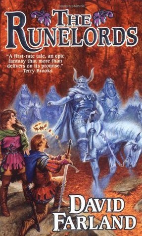

The Runelords
- Read on 2018-05-18
- Rating: ️️️️️
- Format: 🎧 (21 hours 56 minutes)
This book/series has an interesting dynamic where people are able to give one endowment of a specific trait (looks, hearing, vision, wit, braun, metabolism, etc) to somebody else, completely losing that trait themselves. With a tyrant able to collect thousands of endowments from others, the northern kingdoms are looking to bond together against a seemingly unstoppable force.
The most notable thing about this book, apart from the magic system mentioned, is that the book simply... ended. Just like that. It felt _very_ anticlimactic, or that it was stopping at a point that wasn't really the end. I'm curious to read another in the series, but I'm not sure when I'll make it a priority.
- Prior: Roots
- Next: The Survivor